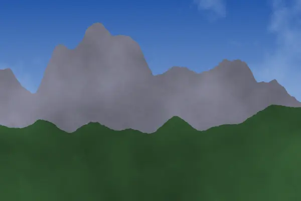
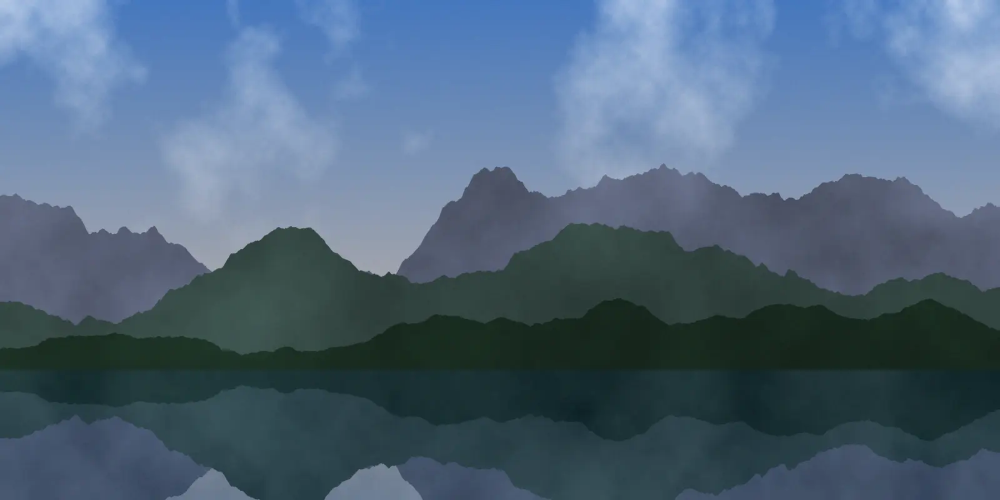
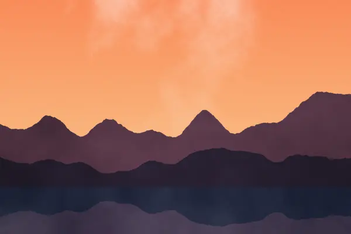
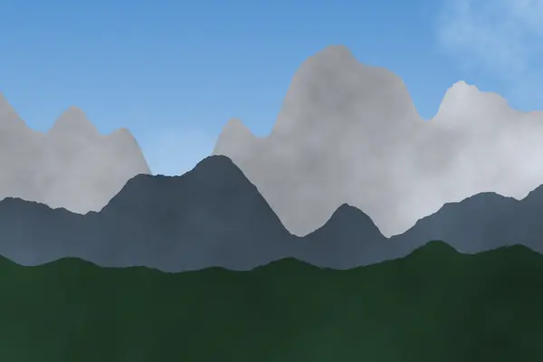
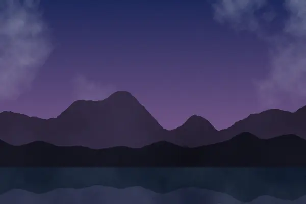
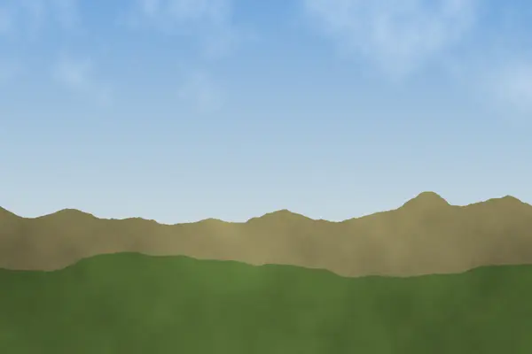
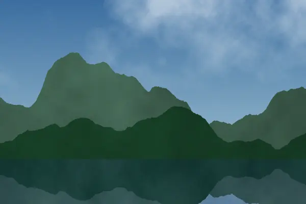

Vrhovi iznad oblaka
Dvodnevni uspon sa noćenjem u planinarskom domu.
od 89 KM

Vođene ture kroz netaknutu prirodu, za sve uzraste i nivoe kondicije.
Pogledaj tureVeć deset godina organizujemo planinarske i biciklističke ture kroz najljepše predjele regiona. Naši vodiči poznaju svaku stazu, svaki izvor i svako skrovito mjesto za odmor. Bez obzira na to da li ste iskusan planinar ili tek počinjete, za vas imamo turu prilagođenu vašem tempu.

Dvodnevni uspon sa noćenjem u planinarskom domu.
od 89 KM

Lagana večernja šetnja uz obalu i fotografisanje.
od 35 KM

Zimska tura sa krpljama i stručnim vodičem.
od 120 KM

Kampovanje i posmatranje neba daleko od gradskih svjetala.
od 75 KM

Biciklistička tura kroz sela i pašnjake.
od 45 KM

Pješačenje uz rijeku i kupanje u prirodnim bazenima.
od 60 KM